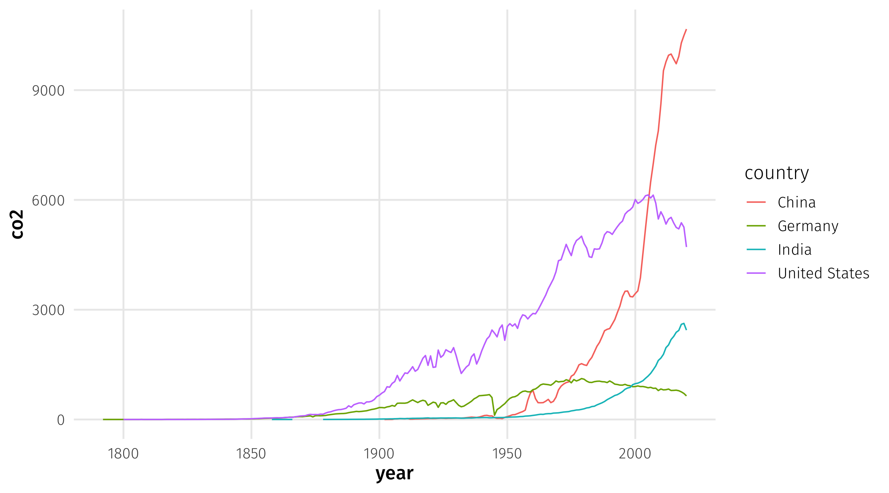
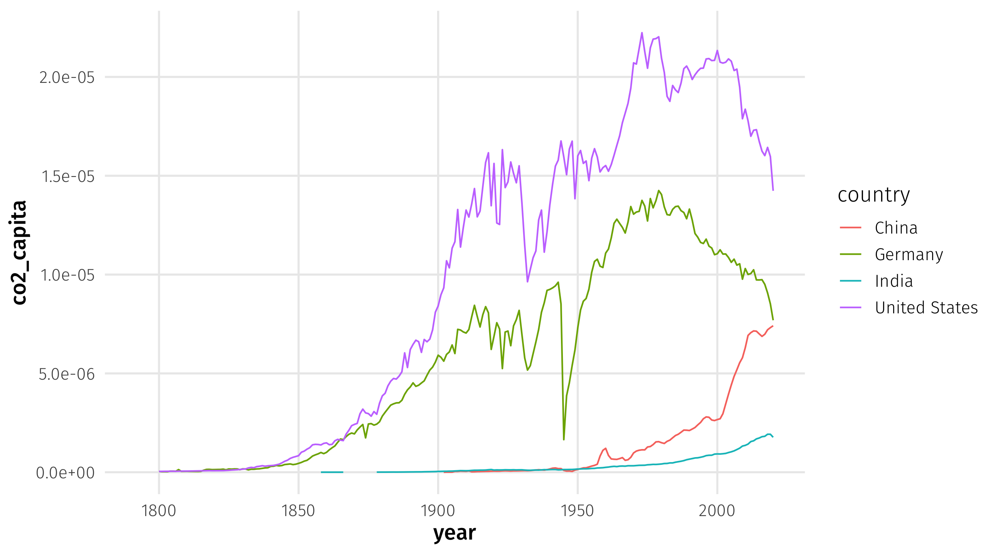
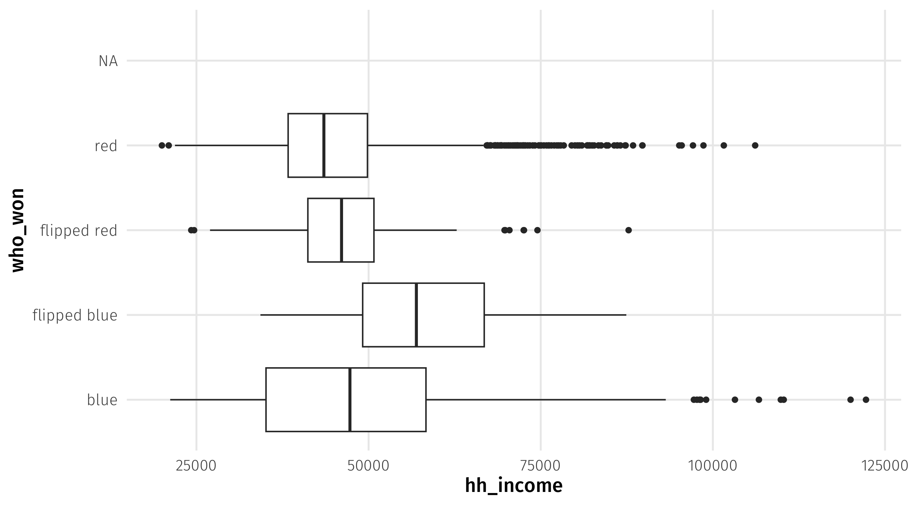

# libraries
library(tidyverse)
library(nycflights13)Data wrangling
In-class example
Here’s the code we’ll be using in class. Download it and store it with the rest of your materials for this course. If simply clicking doesn’t trigger download, you should right-click and select “save link as…”
Filtering
Often, we have a big dataset that covers lots of stuff (say, all flights coming out of NYC in 2013) but we’re only interested in a subset of those things (say, flights that arrived late over that time period). The filter() function is a way to subset operations that match some rule or set of rules (e.g., rule = “flights that arrived late”). We define these rules using logical operators.
Examples
Let’s load the libraries.
Remember you can look at the data like this.
# look at the data
View(flights) # open data in viewer
?flights # read data documentationLet’s look at flights from February.
# look at fights, but only from February
flights %>%
filter(month == 2)# A tibble: 24,951 × 19
year month day dep_time sched_dep_time dep_delay arr_time sched_arr_time
<int> <int> <int> <int> <int> <dbl> <int> <int>
1 2013 2 1 456 500 -4 652 648
2 2013 2 1 520 525 -5 816 820
3 2013 2 1 527 530 -3 837 829
4 2013 2 1 532 540 -8 1007 1017
5 2013 2 1 540 540 0 859 850
6 2013 2 1 552 600 -8 714 715
7 2013 2 1 552 600 -8 919 910
8 2013 2 1 552 600 -8 655 709
9 2013 2 1 553 600 -7 833 815
10 2013 2 1 553 600 -7 821 825
# ℹ 24,941 more rows
# ℹ 11 more variables: arr_delay <dbl>, carrier <chr>, flight <int>,
# tailnum <chr>, origin <chr>, dest <chr>, air_time <dbl>, distance <dbl>,
# hour <dbl>, minute <dbl>, time_hour <dttm>Let’s look at flights on Valentine’s Day.
# now let's look at flights on Valentine's Day
flights %>%
filter(month == 2) %>%
filter(day == 14)# A tibble: 956 × 19
year month day dep_time sched_dep_time dep_delay arr_time sched_arr_time
<int> <int> <int> <int> <int> <dbl> <int> <int>
1 2013 2 14 7 2352 15 448 437
2 2013 2 14 59 2339 80 205 106
3 2013 2 14 454 500 -6 641 648
4 2013 2 14 510 515 -5 750 814
5 2013 2 14 531 530 1 828 831
6 2013 2 14 541 540 1 850 850
7 2013 2 14 542 545 -3 1014 1023
8 2013 2 14 551 600 -9 831 906
9 2013 2 14 552 600 -8 657 708
10 2013 2 14 553 600 -7 902 856
# ℹ 946 more rows
# ℹ 11 more variables: arr_delay <dbl>, carrier <chr>, flight <int>,
# tailnum <chr>, origin <chr>, dest <chr>, air_time <dbl>, distance <dbl>,
# hour <dbl>, minute <dbl>, time_hour <dttm>Let’s try the OR logical operator by looking at flights going to ATL or SFO.
# try one using text and the OR symbol
# look at fights going to ATL or SFO
flights %>%
filter(dest == "ATL" | dest == "SFO")# A tibble: 30,546 × 19
year month day dep_time sched_dep_time dep_delay arr_time sched_arr_time
<int> <int> <int> <int> <int> <dbl> <int> <int>
1 2013 1 1 554 600 -6 812 837
2 2013 1 1 558 600 -2 923 937
3 2013 1 1 600 600 0 837 825
4 2013 1 1 606 610 -4 837 845
5 2013 1 1 611 600 11 945 931
6 2013 1 1 615 615 0 833 842
7 2013 1 1 655 700 -5 1037 1045
8 2013 1 1 658 700 -2 944 939
9 2013 1 1 729 730 -1 1049 1115
10 2013 1 1 734 737 -3 1047 1113
# ℹ 30,536 more rows
# ℹ 11 more variables: arr_delay <dbl>, carrier <chr>, flight <int>,
# tailnum <chr>, origin <chr>, dest <chr>, air_time <dbl>, distance <dbl>,
# hour <dbl>, minute <dbl>, time_hour <dttm>Let’s look at flights between noon and 5pm.
# try one using greater than or less than
# look at flights departing between 12pm and 5pm
flights %>%
filter(dep_time >= 1200) %>%
filter(dep_time <= 1700)# A tibble: 99,136 × 19
year month day dep_time sched_dep_time dep_delay arr_time sched_arr_time
<int> <int> <int> <int> <int> <dbl> <int> <int>
1 2013 1 1 1200 1200 0 1408 1356
2 2013 1 1 1202 1207 -5 1318 1314
3 2013 1 1 1202 1159 3 1645 1653
4 2013 1 1 1203 1205 -2 1501 1437
5 2013 1 1 1203 1200 3 1519 1545
6 2013 1 1 1204 1200 4 1500 1448
7 2013 1 1 1205 1200 5 1503 1505
8 2013 1 1 1206 1209 -3 1325 1328
9 2013 1 1 1208 1158 10 1540 1502
10 2013 1 1 1211 1215 -4 1423 1413
# ℹ 99,126 more rows
# ℹ 11 more variables: arr_delay <dbl>, carrier <chr>, flight <int>,
# tailnum <chr>, origin <chr>, dest <chr>, air_time <dbl>, distance <dbl>,
# hour <dbl>, minute <dbl>, time_hour <dttm>Let’s look at how many flights arrived late on christmas day.
## how many flights arrived LATE, on christmas day?
late_xmas = flights %>%
filter(arr_time > sched_arr_time) %>%
filter(month == 12, day == 25)World leaders
The first leader:
# do your work here
leader |>
filter(country == "VNM", yr_office == 1, age == 11)# A tibble: 1 × 16
country gwcode leader gender year yr_office age edu mil_service combat
<chr> <dbl> <chr> <chr> <dbl> <dbl> <dbl> <fct> <dbl> <dbl>
1 VNM 815 Thanh Th… M 1889 1 11 Seco… 0 0
# ℹ 6 more variables: rebel <dbl>, yrs_exp <dbl>, phys_health <dbl>,
# mental_health <dbl>, will_force <dbl>, will_force_sd <dbl>The second leaders:
leader |>
filter(edu == "Graduate", year == 2015, yr_office == 16)# A tibble: 2 × 16
country gwcode leader gender year yr_office age edu mil_service combat
<chr> <dbl> <chr> <chr> <dbl> <dbl> <dbl> <fct> <dbl> <dbl>
1 RUS 365 Putin M 2015 16 63 Grad… 0 0
2 SYR 652 Bashar a… M 2015 16 50 Grad… 1 0
# ℹ 6 more variables: rebel <dbl>, yrs_exp <dbl>, phys_health <dbl>,
# mental_health <dbl>, will_force <dbl>, will_force_sd <dbl>The third leaders:
leader |> filter(yr_office > 20) |>
filter(rebel == 1) |>
filter(will_force > 1.7)# A tibble: 46 × 16
country gwcode leader gender year yr_office age edu mil_service combat
<chr> <dbl> <chr> <chr> <dbl> <dbl> <dbl> <fct> <dbl> <dbl>
1 MEX 70 Diaz M 1896 21 66 Univer… 1 1
2 MEX 70 Diaz M 1897 22 67 Univer… 1 1
3 MEX 70 Diaz M 1898 23 68 Univer… 1 1
4 MEX 70 Diaz M 1899 24 69 Univer… 1 1
5 MEX 70 Diaz M 1900 25 70 Univer… 1 1
6 MEX 70 Diaz M 1901 26 71 Univer… 1 1
7 MEX 70 Diaz M 1902 27 72 Univer… 1 1
8 MEX 70 Diaz M 1903 28 73 Univer… 1 1
9 MEX 70 Diaz M 1904 29 74 Univer… 1 1
10 MEX 70 Diaz M 1905 30 75 Univer… 1 1
# ℹ 36 more rows
# ℹ 6 more variables: rebel <dbl>, yrs_exp <dbl>, phys_health <dbl>,
# mental_health <dbl>, will_force <dbl>, will_force_sd <dbl>bots
Note that you can use distinct to see all the values a variable takes on, like so:
bot |>
distinct(religion)# A tibble: 13 × 1
religion
<fct>
1 Roman Catholic
2 Protestant
3 Jewish
4 Nothing in particular
5 Agnostic
6 Atheist
7 Something else
8 Mormon
9 Hindu
10 Muslim
11 Eastern or Greek Orthodox
12 Buddhist
13 <NA> Here is female voters, with post-graduate degrees, who voted for Trump:
bot |>
filter(sex == "Female",
votechoice == "Donald J. Trump (Republican)",
educ == "Post-grad")# A tibble: 748 × 19
state sex age educ race pid7 ideo5 religion votechoice hispanic
<fct> <fct> <dbl> <fct> <chr> <fct> <fct> <fct> <fct> <fct>
1 South Carol… Fema… 33 Post… White Inde… Mode… Protest… Donald J.… No
2 New York Fema… 65 Post… White Stro… Cons… Roman C… Donald J.… No
3 Oregon Fema… 55 Post… White Not … Mode… Protest… Donald J.… No
4 Massachuset… Fema… 67 Post… White Lean… Mode… Protest… Donald J.… No
5 New York Fema… 65 Post… White Stro… Cons… Protest… Donald J.… No
6 Iowa Fema… 62 Post… White Stro… Very… Roman C… Donald J.… No
7 Wisconsin Fema… 82 Post… White Inde… Cons… Protest… Donald J.… No
8 Alaska Fema… 45 Post… White Stro… Cons… Protest… Donald J.… No
9 Massachuset… Fema… 50 Post… White Stro… Very… Eastern… Donald J.… No
10 Massachuset… Fema… 73 Post… White Lean… Mode… Roman C… Donald J.… No
# ℹ 738 more rows
# ℹ 9 more variables: know_governor <fct>, conceal <fct>, prochoice <fct>,
# cleanair <fct>, wall <fct>, mandmin <fct>, aca <fct>, minwage <fct>,
# newsint <fct>Mutating
Climate
Here is how to do the climate example,
Graph 1:
sub_climate = climate |>
filter(country == "Germany" | country == "United States" |
country == "China" | country == "India") |>
mutate(co2_capita = co2 / population)
ggplot(data = sub_climate, aes(x = year, y = co2, color = country)) + geom_line()
Graph 2:
ggplot(data = sub_climate, aes(x = year, y = co2_capita, color = country)) + geom_line()
Elections
Here is how we classify elections based on who won:
cat_elections = elections |>
mutate(who_won = case_when(per_dem_2012 > per_gop_2012 & per_dem_2016 > per_gop_2016 ~ "blue",
per_dem_2012 < per_gop_2012 & per_dem_2016 < per_gop_2016 ~ "red",
per_dem_2012 > per_gop_2012 & per_dem_2016 < per_gop_2016 ~ "flipped red",
per_dem_2012 < per_gop_2012 & per_dem_2016 > per_gop_2016 ~ "flipped blue"))
ggplot(cat_elections, aes(y = who_won, x = hh_income)) + geom_boxplot()